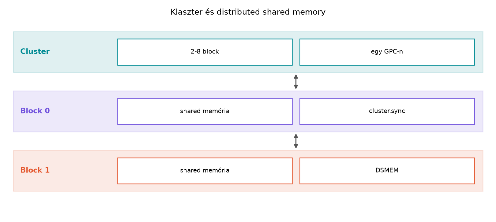

A thread block cluster a cooperative groups modell legfontosabb
újítása a Hopper-generációtól kezdve. A korábbi fejezetben megismert
thread_group, tiled_partition és blokk-szintű
csoportok a blokk határain belül maradtak. A klaszter ezt a határt lépi
át: több, egyidejűleg futó blokkot fog össze egy szoros együttműködésre
képes csoportba, és ehhez a hardver egy új memóriateret is ad: a
distributed shared memory-t (DSMEM). Ebben az alfejezetben a klaszter
fogalmát, a DSMEM címzését, a cluster.sync()
szinkronizációt és a tipikus hibákat járjuk körül, majd egy kisméretű,
ellenőrizhető laborral zárunk.

A hagyományos CUDA-végrehajtási modellben a blokkok függetlenek. A specifikáció garantálja, hogy a blokkok tetszőleges sorrendben, tetszőleges számú SM-en futhatnak, és közöttük nincs biztonságos, alacsony késleltetésű kommunikáció. A blokkok közötti adatcsere kizárólag a global memórián keresztül történhet, amihez legalább egy kernelhatár vagy atomi művelet és megfelelő memória-fence szükséges. Ez a modell nagyfokú skálázhatóságot ad, de számos algoritmusban – például stencil-számítások halo-cseréjénél, mátrix-szorzásnál, ahol a blokkok közösen használnak egy nagyobb csempét, vagy olyan redukcióknál, ahol a blokkok közötti fast path hasznos – a global memória körülményessé és lassúvá teszi az együttműködést.
A thread block cluster ezt a korlátot oldja fel. A klaszter egy
olyan, a hardver által együtt ütemezett blokkcsoport, amelynek tagjai
hozzáférhetnek egymás shared memóriájához. Ez a distributed shared
memory (DSMEM) a klaszterhez tartozó blokkok shared memóriaterületének
logikai uniója. A blokk továbbra is a szinkronizáció alapegysége
(__syncthreads()), de a klaszter egy új szintet ad:
cluster.sync(), amely a klaszter összes blokkját
szinkronizálja. A klaszterek tehát a blokkok közötti finomszemcsés,
alacsony késleltetésű adatcserét teszik lehetővé anélkül, hogy a
kernelnek vissza kellene térnie a hostra, vagy global memórián keresztül
kellene koordinálnia.
Fontos megkülönböztetni a klasztert a grid-szintű szinkronizációtól. A klaszter egy kisebb, hardveresen garantáltan együtt ütemezett csoport, míg a grid-szintű szinkronizáció az egész gridre vonatkozik, és gyakran csak akkor működik, ha az összes blokk egyszerre rezidens az eszközön. A klaszterek így egy közbülső, gyakran hatékonyabb együttműködési szintet adnak, különösen akkor, ha a teljes grid szinkronizálása nem lehetséges vagy nem kívánatos. A grid-szintű szinkronizáció részleteit a következő alfejezet tárgyalja.
A thread block clustert a Hopper-architektúra (compute capability
9.0) vezette be, és a Blackwell (sm_100) is támogatja. A klaszterek
használatához a kernelben meg kell adni a klaszter dimenzióit a
__cluster_dims__ attribútummal, például:
__global__ void __cluster_dims__(2, 1, 1) my_kernel(...)Ez azt jelenti, hogy minden klaszter 2×1×1, azaz összesen 2 blokkot
tartalmaz. A launch konfigurációban a grid dimenzió ekkor nem a blokkok,
hanem a klaszterek számát adja meg. Ha a híváskor
<<<numClusters, blockDim, sharedBytes, stream>>>
szerepel, akkor a hardver numClusters darab klasztert hoz
létre, és minden klaszterben a __cluster_dims__ által
meghatározott számú blokk fut. A tényleges blokkszám tehát
numClusters * clusterDim.x * clusterDim.y * clusterDim.z.
A klaszterek méretét a hardver korlátozza. A Hopper-generációban a
klaszter legfeljebb 8 blokkot tartalmazhat, és a klaszter dimenziói
egyenként legfeljebb 8 értéket vehetnek fel, de a szorzatuk nem
haladhatja meg a 8-at. A pontos korlátokat futásidőben lekérdezhetjük a
cudaDeviceGetAttribute függvénnyel:
int clusterLaunchSupported = 0;
int maxClusterDim[3] = {0,0,0};
CUDA_CHECK(cudaDeviceGetAttribute(&clusterLaunchSupported,
cudaDevAttrClusterLaunch, 0));
CUDA_CHECK(cudaDeviceGetAttribute(&maxClusterDim[0],
cudaDevAttrMaxClusterDimX, 0));
CUDA_CHECK(cudaDeviceGetAttribute(&maxClusterDim[1],
cudaDevAttrMaxClusterDimY, 0));
CUDA_CHECK(cudaDeviceGetAttribute(&maxClusterDim[2],
cudaDevAttrMaxClusterDimZ, 0));Emellett az cudaOccupancyMaxActiveClusters lekérdezi,
hogy adott kernel és launch-konfiguráció mellett hány klaszter lehet
egyidejűleg aktív. Ez az API figyelembe veszi a regiszter- és shared
memory korlátokat, valamint a klaszterek hardveres erőforrásigényét.
A klaszterek fizikai megvalósításához a Hopper SM-ek között dedikált, nagy sávszélességű interconnect áll rendelkezésre. Ez teszi lehetővé, hogy egy blokk egy másik, ugyanabban a klaszterben futó blokk shared memóriáját olvassa vagy írja anélkül, hogy a global memória hierarchiáján keresztül kellene mennie. A DSMEM-hozzáférés késleltetése alacsonyabb, mint a global memória, de magasabb, mint a saját shared memória elérése. A tényleges teljesítmény a klaszter méretétől, az SM-ek közötti topológiától és a hozzáférési mintától függ. A hardveres támogatás az egyik fő oka annak, hogy a klaszterek csak az újabb architektúrákon érhetők el.
A distributed shared memory a klaszterhez tartozó blokkok shared
memóriáinak összessége. Minden blokk továbbra is saját, privát shared
memóriával rendelkezik, amelynek méretét a kernel launch
shared_bytes paramétere határozza meg. A DSMEM ezt a privát
területet teszi elérhetővé a klaszter többi blokkja számára.
A DSMEM eléréséhez a cooperative_groups::cluster_group
osztály szolgál. A klaszter csoportot a kernelben a következőképpen
kapjuk meg:
#include <cooperative_groups.h>
namespace cg = cooperative_groups;
__global__ void __cluster_dims__(2, 1, 1) dsmem_kernel() {
cg::cluster_group cluster = cg::this_cluster();
// ...
}A cluster_group fontosabb metódusai:
cluster.block_rank(): a hívó blokk rangja a klaszteren
belül (0 és dim_blocks()-1 között).cluster.dim_blocks(): a klaszter dimenziói
(dim3 típus).cluster.num_blocks(): a klaszterben lévő blokkok teljes
száma.cluster.sync(): klaszter-szintű barrier.cluster.map_shared_rank(void* addr, int rank): a
megadott saját shared memory címhez visszaadja a rank rangú
blokk megfelelő shared memory-címét.A map_shared_rank kulcsfontosságú: ez képezi le a
DSMEM-címeket. Az addr paraméter a hívó blokk shared
memóriájának egy érvényes címe, a rank pedig a célblokk
rangja a klaszteren belül. A visszatérési érték egy pointer a célblokk
shared memóriájában ugyanarra a relatív címre. Például ha a saját
blokkban az smem tömb a shared memória elején van, akkor a
másik blokk ugyanazon smem tömbjének első elemét a
cluster.map_shared_rank(smem, other_rank) címen érjük
el.
Fontos megérteni, hogy a DSMEM-hozzáférés nem igényel explicit másolást. A pointer közvetlenül a távoli blokk shared memóriájára mutat, ezért az olvasás és írás a hardveres interconnecten keresztül történik. A hozzáférés azonban nem tranzakcionális, és a memória-láthatóságot explicit szinkronizációval kell biztosítani.
A DSMEM használatakor a shared memória mérete továbbra is blokkonként
értendő. Ha minden blokk például 32 KiB shared memóriát allokál, akkor
egy 4 blokkos klaszter összesen 128 KiB DSMEM-et tesz elérhetővé a
klaszter számára. A klaszter teljes DSMEM-mérete azonban nem haladhatja
meg a hardver által támogatott maximális klaszter-szintű shared memória
korlátot. Ezt a cudaDevAttrMaxClusterSharedMemory
attribútummal kérdezhetjük le. A gyakorlatban a klaszterek használata
növeli az egy blokkra jutó erőforrásigényt, ezért az occupancy
csökkenhet.
A cluster.sync() a klaszter összes blokkja számára egy
közös barrier. Amikor egy blokk meghívja, a hardver megvárja, amíg a
klaszter minden blokkja eléri ugyanezt a hívást, majd minden blokk
folytatja a végrehajtást. Ez hasonló a __syncthreads()-hez,
de nem csak a blokkon belüli szálakat, hanem a klaszter összes
blokkjának összes szálát szinkronizálja.
A cluster.sync() a DSMEM-műveletek láthatóságát is
garantálja. A memória-láthatóság szempontjából a klaszter-szinkronizáció
biztosítja, hogy a barrier előtt végrehajtott összes DSMEM-írás a
barrier után minden blokk számára látható legyen. Ez a szemantika
fontos: ha egy blokk ír a saját shared memóriájába, majd
cluster.sync()-et hív, akkor a klaszter többi blokkja a
cluster.sync() utáni olvasással biztonságosan láthatja az
írt értékeket. Ha viszont egy blokk egy másik blokk shared memóriájába
ír, akkor a láthatóságot a cluster.sync() után garantálja a
hardver, de a részleges frissítések és a versenyhelyzetek elkerülése
érdekében a klaszter-szintű írásokat is szinkronizálni kell.
A cluster.sync() minden blokkban ugyanazt a hívást
jelenti, de a hívás feltételesen is elhelyezhető, ha a feltétel a
klaszter minden blokkjában ugyanazt az eredményt adja. Ha a feltétel nem
uniform a klaszteren belül, a program holtpontra futhat, mert egyes
blokkok sosem érik el a barriert.
A cluster.sync() használata előtt érdemes megfontolni a
blokkon belüli __syncthreads()-et is. A
cluster.sync() nem helyettesíti a blokkszintű
szinkronizációt. Ha egy blokk szálai egymással is osztoznak a saját
shared memórián, akkor a blokkszintű barrierre továbbra is szükség van,
mielőtt a klaszter többi blokkja olvashatná az adatokat. A két szint
egymásra épül: először a blokkon belüli konzisztenciát biztosítjuk, majd
a klaszterszintű konzisztenciát.
Az alábbi CUDA C++ példa egy kétblokkos klasztert indít, amelyben
mindkét blokk inicializálja a saját shared memóriáját, majd a
klaszter-szinkronizáció után mindkét blokk kiolvassa a másik blokk egy
értékét, és ellenőrzi annak helyességét. A példa a DSMEM alapvető
működését mutatja be, és közben gyakorolja a klaszter lekérdezését, a
map_shared_rank használatát és a
cluster.sync()-et.
A kernel:
// CUDA C++ (C++17), nvcc 12.4, -arch=sm_90
#include <cuda_runtime.h>
#include <cooperative_groups.h>
#include <cstdio>
namespace cg = cooperative_groups;
#define CUDA_CHECK(call) \
do { \
cudaError_t err = call; \
if (err != cudaSuccess) { \
std::fprintf(stderr, "CUDA error %s:%d: %s\n", \
__FILE__, __LINE__, cudaGetErrorString(err)); \
std::exit(EXIT_FAILURE); \
} \
} while (0)
__global__ void __cluster_dims__(2, 1, 1)
dsmem_exchange_kernel(int* d_result)
{
extern __shared__ int smem[];
cg::cluster_group cluster = cg::this_cluster();
const int block_rank = cluster.block_rank();
const int tid = threadIdx.x;
// 1. Inicializálás: minden blokk feltölti a saját shared memóriáját.
// Az érték a blokk rangjától és a szál indexétől függ,
// így a távoli blokk értéke egyértelműen azonosítható.
if (tid < blockDim.x) {
smem[tid] = block_rank * 1000 + tid;
}
// 2. Blokkszintű barrier: a saját shared memória írásai befejeződnek.
__syncthreads();
// 3. Klaszter-szinkronizáció: garantálja, hogy mindkét blokk
// elvégezte az inicializálást, és a DSMEM-írások láthatóak.
cluster.sync();
// 4. A másik blokk rangjának meghatározása.
// Kétblokkos klaszterben ez egyszerű: 1 - block_rank.
const int remote_rank = 1 - block_rank;
// 5. A távoli blokk shared memóriájának elérése.
int* remote_smem = cluster.map_shared_rank(smem, remote_rank);
// 6. Ellenőrzés: a 0. szál elvégzi a tényleges összehasonlítást.
if (tid == 0) {
// A várt érték a távoli blokk 0. szálának inicializált értéke.
const int expected = remote_rank * 1000 + 0;
const int actual = remote_smem[0];
// Ha az érték megegyezik, a sikert 0-val, ellenkező esetben 1-gyel jelöljük.
// Az eredményt a global memóriába írjuk, ahol a host ellenőrizheti.
const int cluster_idx = blockIdx.x; // egyetlen klasztert indítunk
d_result[cluster_idx * 2 + block_rank] = (actual == expected) ? 0 : 1;
}
}A kernel launch paraméterei:
1 klaszter (mivel
__cluster_dims__(2,1,1), ez 2 blokkot jelent),256 szál,256 * sizeof(int) bájt,A hostoldali vezérlő:
int main()
{
constexpr int numClusters = 1;
constexpr int blockDim = 256;
constexpr int sharedBytes = blockDim * sizeof(int); // 1024 bájt
// Eszköztámogatás ellenőrzése (Hopper vagy újabb)
int clusterSupported = 0;
CUDA_CHECK(cudaDeviceGetAttribute(&clusterSupported,
cudaDevAttrClusterLaunch, 0));
if (!clusterSupported) {
std::fprintf(stderr, "A klaszterek nem támogatottak ezen az eszközön.\n");
return EXIT_FAILURE;
}
// Kimeneti tömb allokálása: klaszterenként 2 eredmény
int* d_result = nullptr;
CUDA_CHECK(cudaMalloc(&d_result, numClusters * 2 * sizeof(int)));
CUDA_CHECK(cudaMemset(d_result, 0xFF, numClusters * 2 * sizeof(int)));
// Kernel indítás
dsmem_exchange_kernel<<<numClusters, blockDim, sharedBytes>>>(d_result);
CUDA_CHECK(cudaGetLastError());
CUDA_CHECK(cudaDeviceSynchronize());
// Eredmény átmásolása és ellenőrzése
int h_result[2];
CUDA_CHECK(cudaMemcpy(h_result, d_result, sizeof(h_result),
cudaMemcpyDeviceToHost));
bool pass = (h_result[0] == 0) && (h_result[1] == 0);
std::printf("DSMEM exchange: %s (block0=%d, block1=%d)\n",
pass ? "OK" : "FAIL", h_result[0], h_result[1]);
CUDA_CHECK(cudaFree(d_result));
return pass ? EXIT_SUCCESS : EXIT_FAILURE;
}Fordítási parancs:
nvcc -std=c++17 -arch=sm_90 -O3 -o dsmem_exchange dsmem_exchange.cuFuttatás:
./dsmem_exchangeA program kimenete sikeres futás esetén:
DSMEM exchange: OK (block0=0, block1=1)Magyarázat a kódhoz:
__cluster_dims__(2,1,1) attribútum biztosítja, hogy
minden klaszter két blokkot tartalmazzon. A launch
numClusters értéke a klaszterek száma, nem a blokkok száma;
itt 1 klasztert indítunk, tehát 2 blokk fut.cluster.block_rank() adja vissza. Ez
a rang a klaszteren belüli pozíciót jelöli, és a klaszter minden
blokkjában egyedi.extern __shared__ int smem[] a blokk saját shared
memóriáját deklarálja, méretét a launch sharedBytes
paramétere adja meg.map_shared_rank(smem, remote_rank) a saját
smem tömb kezdőcíméből kiszámítja a
remote_rank rangú blokk megfelelő shared memóriacímét. A
visszakapott pointerrel közvetlenül olvashatjuk a távoli blokk
adatait.cluster.sync() a klaszter összes blokkját
szinkronizálja. A példában azért szükséges, mert a távoli olvasás előtt
mindkét blokknek be kell fejeznie a saját shared memóriájának
feltöltését, és a DSMEM-írásoknak láthatóvá kell válniuk.d_result tömb indexelése a klaszter indexét és a
blokk rangját használja. Itt egyetlen klasztert indítunk, ezért
blockIdx.x értéke 0, és a két blokk rangja 0 és 1.A példa szándékosan egyszerű, hogy a klaszter és a DSMEM alapjait hangsúlyozza. Valós algoritmusokban a DSMEM-et jellemzően nagyobb csempék megosztására, halo-cserére vagy blokkok közötti redukcióra használják, ahol a blokkok közötti finomszemcsés adatcsere sávszélesség- vagy késleltetéskritikus.
A klaszterek és a DSMEM használata során több gyakori hiba fordul elő. Az alábbi lista a leggyakoribbakat foglalja össze.
1. Nem támogatott hardveren való futtatás.
A klaszterek csak compute capability 9.0 (Hopper) vagy újabb eszközökön
érhetők el. Ha a kódot régebbi GPU-n futtatjuk, a kernel indítása hibát
ad, vagy a program rosszul viselkedik. Mindig ellenőrizzük a
cudaDevAttrClusterLaunch attribútumot, és adjunk értelmes
hibaüzenetet, ha az eszköz nem támogatja a klasztereket.
2. A klaszter dimenzióinak helytelen megadása.
A __cluster_dims__ attribútumban megadott dimenziók
szorzatának nem szabad meghaladnia a hardveres korlátot (Hopper esetén
8-at). Emellett a dimenziók nem lehetnek 0 vagy negatívak. Ha a
dimenziószorzat túl nagy, a kernel indítása meghiúsul. A maximális
méretet a cudaDevAttrMaxClusterDim* attribútumokkal
kérdezhetjük le, és a kernelben is ellenőrizhetjük a
cluster.num_blocks() értékét.
3. A grid dimenzió félreértelmezése.
Ha a kernel __cluster_dims__ attribútummal rendelkezik, a
<<<grid, block, shared, stream>>> launch
grid paramétere a klaszterek számát jelenti, nem a blokkok
számát. Ez a hagyományos CUDA-modelltől eltérő szemlélet. Ha valaki
tévesen blokkszámként adja meg a gridet, a tényleges blokkszám a
klaszterdimenziók szorzatával nagyobb lesz, ami hibás indexeléshez,
out-of-bounds hozzáféréshez vagy nem várt teljesítményhez vezet. A
megoldás: a gridet mindig a kívánt klaszterszámra állítsuk, és a
blokkindexeket a cluster.block_rank() segítségével
számítsuk.
4. Hiányzó vagy rosszul elhelyezett
cluster.sync().
A DSMEM-hozzáférések előtt a klasztert szinkronizálni kell, különben a
távoli blokk írásai még nem láthatóak. A cluster.sync()-et
minden olyan ponton meg kell hívni, ahol a blokkok közötti adatfüggőség
van. Gyakori hiba, hogy a fejlesztő csak __syncthreads()-et
használ, és elfelejti a klaszterszintű barriert. A
cluster.sync() nem helyettesíti a blokkszintű
szinkronizációt; a kettőt együtt kell használni. Ha egy blokk ír a saját
shared memóriájába, majd a klaszter többi blokkja olvassa azt, a
sorrend: blokkszintű írás, __syncthreads(),
cluster.sync(), majd a távoli olvasás.
5. A map_shared_rank helytelen
használata.
A map_shared_rank csak a hívó blokk saját shared
memóriájában érvényes címet fogad el. Ha global vagy local memóriacímet
adunk át, a viselkedés definiálatlan. Emellett a rank
paraméternek a klaszteren belüli érvényes rangot kell megadnia; a 0 és
cluster.num_blocks()-1 közötti tartományból. Ha a rang
érvénytelen, a hardver hibát jelezhet, vagy a program rossz
memóriaterületre mutat. A rangokat mindig a
cluster.block_rank() és a cluster.dim_blocks()
alapján számítsuk.
6. DSMEM-versenyhelyzetek.
A DSMEM nem tranzakcionális, és a blokkok közötti egyidejű olvasás/írás
versenyhelyzethez vezethet. Ha két blokk ugyanazt a távoli shared
memóriacímet írja, az eredmény definiálatlan. Az ilyen mintákat atomi
műveletekkel vagy gondos szinkronizációval kell elkerülni. A
gyakorlatban a DSMEM-et tipikusan úgy használjuk, hogy minden blokk a
saját shared memóriájába ír, és a többi blokk csak olvas, vagy explicit
feladatmegosztással biztosítjuk, hogy ne legyen ütközés.
7. Occupancy-csökkenés és
erőforrás-túlfoglalás.
A klaszterek használata megnöveli az SM-ek erőforrásigényét, mert több
blokkot kell egyidejűleg rezidensen tartani, és a DSMEM-interconnect
sávszélességét is figyelembe kell venni. Ha a klaszter túl nagy,
előfordulhat, hogy egyetlen klaszter sem fér el az SM-eken, vagy az
occupancy drasztikusan lecsökken. Az
cudaOccupancyMaxActiveClusters API-val ellenőrizhetjük,
hogy adott konfiguráció mellett hány klaszter lehet aktív.
Optimalizáláskor érdemes a klaszterméretet a valós adatfüggőségekhez
igazítani, nem pedig a maximálisat használni.
8. A kernel-attribútum és a launch konfiguráció
eltérése.
A __cluster_dims__ attribútumot a kernel definíciójában
kell megadni, és a launch során nem lehet felülírni. Ha a kernelben
__cluster_dims__(2,1,1) szerepel, akkor a hívásnak nem
lehet más klaszterdimenziója. A cudaLaunchKernelEx API-val
dinamikusan is megadhatók a klaszterdimenziók, de ebben az esetben a
kernelnek nem szabad __cluster_dims__ attribútummal
rendelkeznie. A két módszer keverése hibát okoz.
Ez a labor a fenti példát bővíti ki több klaszter indításával, és méri a DSMEM-hozzáférés alapvető teljesítményjellemzőit. A labor célja, hogy az olvasó saját környezetében reprodukálja a klaszterek működését, és mérési naplót készítsen.
Cél:
Egy olyan CUDA C++ program futtatása, amely több klasztert indít, minden
klaszter két blokkot tartalmaz, és a blokkok a DSMEM-en keresztül
cserélnek adatot. A program méri a kernel futásidejét, a klaszterek
számának hatását, és ellenőrzi az eredmények helyességét.
Kód:
A fenti példa kódját módosítjuk úgy, hogy a numClusters
értéke paraméterezhető legyen, és a kimeneti tömb mérete
numClusters * 2 legyen. Emellett a kernelben a klaszter
indexét kiszámítjuk a blokkindexből és a klaszterdimenzióból, hogy több
klaszter esetén is helyes legyen az eredmény indexelése. A kernel:
__global__ void __cluster_dims__(2, 1, 1)
dsmem_exchange_kernel(int* d_result, int numClusters)
{
extern __shared__ int smem[];
cg::cluster_group cluster = cg::this_cluster();
const int block_rank = cluster.block_rank();
const int tid = threadIdx.x;
if (tid < blockDim.x) {
smem[tid] = block_rank * 1000 + tid;
}
__syncthreads();
cluster.sync();
const int remote_rank = 1 - block_rank;
int* remote_smem = cluster.map_shared_rank(smem, remote_rank);
if (tid == 0) {
const int expected = remote_rank * 1000 + 0;
const int actual = remote_smem[0];
// A klaszter indexe a blokk indexéből és a klaszterdimenzióból számítható.
// Mivel a gridDim.x a klaszterek száma, a blokk indexek lineárisan nőnek.
// A klaszter index = blockIdx.x / cluster.dim_blocks().x
const int cluster_idx = blockIdx.x / cluster.dim_blocks().x;
d_result[cluster_idx * 2 + block_rank] = (actual == expected) ? 0 : 1;
}
}A hostkódban a numClusters értékét parancssori
argumentumként olvassuk be, és a méréshez cudaEvent-eket
használunk. A mérési ciklus előtt egy warm-up hívást végzünk, majd 10
iterációt mérünk, és kiszámítjuk az átlagos futásidőt és a szórást. A
mérés során a GPU órajelét és a power limitet rögzítjük, hogy a
reprodukálhatóság biztosított legyen.
Buildparancs:
nvcc -std=c++17 -arch=sm_90 -O3 -o dsmem_lab dsmem_lab.cuFuttatási parancs:
./dsmem_lab 4Ahol a 4 a klaszterek száma. A program kimenete
tartalmazza a helyesség-ellenőrzést és a mért időket.
GPU-konfiguráció (példa):
- GPU: NVIDIA H100 PCIe 80 GB
- Compute capability: 9.0
- Driver: 550.54.15
- CUDA: 12.4
- Órajel: rögzített (alapértelmezett)
- Power limit: 350 W (alapértelmezett)
- ECC: kikapcsolva
- MIG: nem aktív
- Virtualizáció: nincs
- Háttérterhelés: nincs
Mérési napló (illusztratív, nem valós mérés):
Az alábbi táblázat egy lehetséges mérési naplót mutat. A számok a labor
elvégzése előtt csak példák; a tényleges értékeket az olvasónak kell
megmérnie a saját izolált környezetében.
| Klaszterek száma | Blokkok száma | Átlag futásidő (µs) | Szórás (µs) | Helyes? | Occupancy (klaszter/SM) | Shared memory / blokk (B) |
|---|---|---|---|---|---|---|
| 1 | 2 | 12.4 | 0.8 | igen | 1 | 1024 |
| 4 | 8 | 13.1 | 1.1 | igen | 2 | 1024 |
| 8 | 16 | 14.9 | 1.5 | igen | 4 | 1024 |
A futásidő a kernel teljes végrehajtását méri, beleértve a
DSMEM-hozzáférést is. A szórás a 10 ismétlésből számított szórás. Az
occupancy oszlop a cudaOccupancyMaxActiveClusters által
visszaadott aktív klaszterek számát mutatja SM-enként. A mérési naplóban
fel kell tüntetni a driver- és CUDA-verziót, valamint az órajel- és
power limit beállításokat is.
Várt eredmény:
A program minden klaszterben mindkét blokkra 0-t ír a kimeneti tömbbe,
ami azt jelzi, hogy a DSMEM-csere sikeres volt. Ha bármelyik érték 1,
akkor a távoli olvasás hibás, és a hibát a fenti tipikus hibák alapján
kell diagnosztizálni. A futásidő a klaszterek számával enyhén nőhet,
mert a DSMEM-hozzáférés késleltetése és a hardveres ütemezés terhelése
nő. A pontos értékek erősen függenek az adott GPU-tól és a rendszer
konfigurációjától.
Fontos biztonsági megjegyzés:
A klaszterkernelt izolált környezetben futtassuk, mert a hibás
klaszterdimenzió vagy szinkronizáció eszközleállást okozhat. A
nvidia-smi segítségével figyeljük az eszköz állapotát, és
állítsunk be timeoutot a futtatáshoz. Többfelhasználós GPU-n kerüljük a
klaszterek használatát, vagy gondoskodjunk a szomszédos terhelés
izolálásáról.
A thread block cluster a Hopper-generáció által bevezetett hardveres
együttműködési szint, amely lehetővé teszi, hogy több blokk szorosan
együttműködjön egy klaszteren belül. A distributed shared memory a
klaszter blokkjainak shared memóriáit egyesíti, és a
map_shared_rank segítségével a blokkok közvetlenül elérik
egymás shared memóriáját. A cluster.sync() klaszterszintű
barriert biztosít, amely a DSMEM-műveletek láthatóságát is garantálja. A
klaszterek használata új lehetőségeket nyit a blokkok közötti
finomszemcsés kommunikációra, de gondos konfigurációt és hibakezelést
igényel.
Önellenőrző kérdés:
Mi a különbség a __syncthreads() és a
cluster.sync() között, és miért van szükség mindkettőre, ha
egy klaszter blokkja DSMEM-en keresztül olvassa egymás adatait? Válaszát
indokolja egy rövid példával.